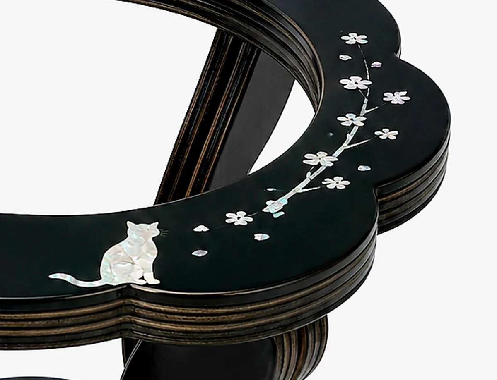

다루는 재료

옻칠
옻나무 수액을 정제해 만든 천연 도료입니다. 마르는 것이 아니라 습도와 온도가 맞는 칠장 안에서 굳습니다. 한 겹이 굳는 데 며칠이 걸리고, 그 과정을 여러 번 반복해야 표면이 완성됩니다.
굳은 옻칠은 물과 열, 부식에 강합니다. 1500년 전 무덤에서 나온 칠기가 아직 형태를 유지하는 이유입니다.

자개
전복이나 소라의 껍데기를 얇게 갈아 만듭니다. 두께가 종이만큼 얇아지면 그때부터 빛이 통과하면서 각도에 따라 색이 달라집니다.
도안에 맞춰 실톱으로 자르고, 옻칠 표면에 한 조각씩 붙입니다. 인쇄나 스티커로는 낼 수 없는 빛입니다.